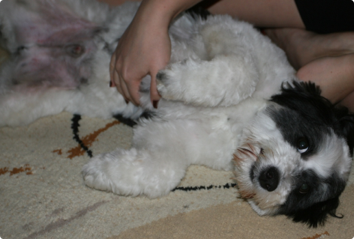

Тоша дома!
Украден из Некрасовского приюта в 2009 году.
Увидела фото волосатой копны с высунутым языком, и влюбилась! (Сама в любовь с 1го взгляда не верю, с мужчинами такого не случалось)).
Поэтому пока ждала ответа от Тохиного куратора, объездила кучу приютов, подбирали, вызволяли и пристраивали других собак, стала активной участницей ПиКа, но ждала именно его)